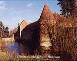

|
Les 17 Communes
du Canton de
Beaumesnil :
Le Noyer en
Ouche
Gouttières
Beaumesnil
Thevray
Ajou
Saint
Aubin des Hayes
Sainte
Marguerite en Ouche
Les Jonquerets
de Livet
Saint
Aubin le Guichard
Grandchain - Granchain
La Barre
en Ouche
Bosc-Renoult
en Ouche
Epinay
Landepéreuse
Gisay la
Coudre
La Roussière
Saint
Pierre du Mesnil
Retour
Le Canton de
Beaumesnil
Présentation :
cliquez...
|
Saint Pierre du Mesnil :
Superficie : 792 Ha - 105 Habitants
-
(déc 2015)
soit 13 Habitants par km² ou 7,54 Ha par Habitant
C'est la commune la plus élevée du canton : 206 m.
|
Mairie :
02.32.44.65.71
Secrétaire : Aurélie
TORCHET
Secrétariat ouvert le Lundi de
16h00 à 18h00
E-mail :
saintpierre@meo27.fr
Maire délégué : Jean-Michel ADELINE
Tel : 02.32.44.24.43 Port : 06.72.13.54.25 - E-mail :
Conseillers :
Mme GUERIN Jennifer
conseillère municipale – conseillère communale de
Saint-Pierre-du-Mesnil
M. LECOMTE Alexis
conseiller municipal – conseiller communal de
Saint-Pierre-du-Mesnil
|
|
Château du
Blanc-Buisson - Saint Pierre du Mesnil
Spectacle Son et Lumière
18 et 19 mai 2012
25, 26 et 27 mai 2012
1er et 2 juin 2012
Apéritif Spectacle Concert - 16 juin 2012 à
20h30
« Les Dames galantes à la cour du Roi Soleil »
20 Euros par pers - Réservation conseillée
Le programme complet de l'ASPROB sur
https://www.blancbuisson.com/
Tél : 02.32.46.45.68 |
|
Mise à l'Honneur
des Communes du canton de Beaumesnil
à l'Office de Tourisme
Horaires et Renseignements :
Office de
Tourisme du Canton de Beaumesnil
Ainsi, elles nous feront mieux connaître leur histoire, mais aussi leur vie
actuelle
au travers de leurs habitants, associations, artisans, agriculteurs, etc...
Saint
Pierre du Mesnil
: Du 8 au 28 janvier 2011
|
Histoire :
La commune de Saint-Pierre du Mesnil a porté les noms de Mesnil-Maudit (1210) et
Mesnil-Maudet,
Le Mesnil-Mauduit est mentionné, en 1210, dans une charte de
Robert de Leycester
Elle devient Saint Pierre du Mesnil Mauduit (1418) et Saint
Pierre du Mesnil en Ouche (1730).
Doyenné de Lyre. Le patronage appartenait au fief de la salle.
L'église de Saint Pierre du Mesnil
n'a conservé de sa construction du XIIIè S. que quatre contreforts en
grison et une corniche en quart-de-rond. Elle fut remaniée au XVIIIè S.
L'église de Saint Pierre du Mesnil
a été sélectionnée parmi les 41 candidatures pour un chantier dans le cadre des
Journées du patrimoine de pays les 18 et 19 juin 2005 initié par Didier Pétrel,
président de la section peinture de la CAPEB. Ce sont donc 2 couvreurs qui
remplaceront des tuiles et assureront les travaux d'étanchéité. Des maçons
refont les petits trottoirs en brique, un tailleur de pierre sculpte un nouveau
bénitier en pierre blanche de Vernon. Des peintres spécialisés remettent à neuf
les deux autels de côté; un menuisier a refait la grande porte tandis que
d'autres travaillent sur des parties de charpente. C'est une dizaine de maîtres
artisans dont des femmes qui vont travailler pendant trois jours et gratuitement
!!! Ils assurent également la formation des stagiaires. (Extrait de l'Eveil
Normand du 06 juillet 2005)
Le Château du Blanc Buisson.
Histoire du lieu
ASPROB
: Association pour la promotion du Blanc Buisson
|
Château du
Blanc-Buisson - Saint Pierre du Mesnil
Samedi 18 Avril 2010 de 10h à 18h
Fête des Plantes "Splendeur au Jardin"
Marché du Terroir - Expos diverses
Le programme complet
2010 de l'ASPROB sur
https://www.blancbuisson.com/
Rappel de la manifestation de 2009, l'ASPROB vous invite à venir découvrir :
« Splendeurs au Jardin »
La 1ère édition de la Journée des plantes au château du Blanc
Buisson le Dimanche 22 mars 2009 de 9h à 18h.
organisée par l'Association pour la Sauvegarde et la Promotion du
Blanc Buisson qui intervient dans le domaine culturel, touristique
et social au cœur du Pays d’Ouche.
Cette première édition vise à rassembler les acteurs qui gravitent
autour des parcs et jardins, des plantes et du potager. Les
visiteurs seront invités à découvrir horticulteurs et pépiniéristes,
exposition de matériel de jardinage et vieux outils, objets de
décoration, animations autour d’une ferme pédagogique, et atelier
de nature et décoration autour de l’art du jardin.
C’est aussi l’occasion de faire découvrir des sujets pédagogiques
tels que les insectes qui peuplent nos jardins, l’ortie, la flore de
la Charentonne et autres sujets d’actualité écologique, par le biais
de conférences dont les horaires seront communiqués aux visiteurs.
Le goût sera aussi
satisfait par la présence d’un marché fermier. Cette manifestation
conviviale se déroulera dans le parc et les visiteurs pourront se
restaurer sur place.
Le printemps sera donc à
la fête au Château du Blanc Buisson 27330 Saint Pierre du Mesnil (15
km de Bernay)
Dimanche 22 mars de 9h à
18h.
Tarifs d’entrée : 4€
adulte, 1,50 € enfants jusqu’à 12 ans.
www.blancbuisson.com
Petit rappel :
Reconnue pour la qualité de son spectacle historique nocturne
mettant en scène les 700 ans d’histoire du château, l’ASPROB
adhérente à la FFFSH (Fédération
Française des Fêtes et Spectacles Historiques), développe et
propose - avec l’aide de 200 bénévoles encadrés de professionnels -
des manifestations culturelles visant à sauvegarder et promouvoir ce
patrimoine historique.
Le Château du Blanc Buisson, demeure féodale dont les origines
remontent à la fin du XIIème siècle, est sans doute l’un
des derniers vestiges de cette architecture à la fois civile et
militaire de l’après Moyen Age dans le Pays d’Ouche (sud du Pays
Risle-Charentonne).
|
https://www.blancbuisson.com/
contact@blancbuisson.com
Le manoir du Blanc-Buisson est une demeure
féodale dont les origines remontent à la fin du XIIè siècle. Au cours des
7 siècles suivants, il n'a appartenu qu'a trois familles. En 700 ans, il
ne fut vendu qu'une seule fois, et s'est toujours transmis par mariage ou
héritage familial.
Location de salle - Séminaires - Réceptions
|
 |
| |
|
Le Château du Blanc Buisson
a été bâti à la fin du XVIè S. sur les fondations d'un très ancien du XIIIè S.(1280-1290),
qui avait été ruiné par faits de guerre (1355) ; Messire Collinet Lecomte lui
donna alors le nom de Blanc-Buisson.
Construit vers 1280 sous le règne de Philippe Le Bel, peu après la mort de
Saint Louis par la famille Collinet-Lecomte pour assurer la protection des
paysans par les brigands.
C'est en 1355 que le Blanc Buisson a subi l'assaut des
troupes du roi de France, Philippe V de Valois, au cours de ses luttes
contre le comte d'Evreux et son connétable Gervais Collinet Le Comte ,
petit fils du bâtisseur du Blanc-Buisson, qui abandonna le château à
demi détruit. Il resta à l'abandon pendant plus d'un siècle.
Marie Le Comte, fille de Jehan Le Comte et Robine du
Rivel, seigneur de Nonan et du
Blanc-Buisson, de Cernières et de Saint Aubin épousa en 1470 Jean II du Merle, seigneur de
Bois-Barbot et des Planches . Elle reviendra en 1474 redonner vie à
la demeure, en l'apportant en dot à son mari Jean II du Merle,
et restera plus de trois siècles (ou quatre, 500 ans selon d'autres
sources) dans cette illustre famille de Normandie.
En 1500, une restauration est entreprise dans le goût de la
Renaissance. Le premier étage de l'aile nord, sans doute détruit par un
incendie, est reconstruit en briques roses à la fin du XIIIè siècle.
Les Le Conte et les du Merle s'y succèdent jusqu'en 1801, seule fois
que le château sera vendu, acheté par Michel Pierre de Pillon de Saint Philbert,
puis transmis après la guerre de 1870 à son neveu Louis de Baudicour.
En 1856, la Blanc-Buisson s'est entouré d'un parc
paysager à l'anglaise, œuvre de Monsieur Morvan, paysagiste rouennais.
Pendant la guerre 1939-45 les propriétaires, le comte
et la comtesse de Baudicour n'ont pas hésité à cacher un aviateur anglais dans
les sous-sols du château.
En 1981, les Baudicour lèguent le Blanc-Buisson à leur
cousin germain et filleul Henri-Dominique de la Fresnaye qui entreprend
avec son épouse et ses enfants d'importants travaux de sauvetage et de
restauration avec la soutien des Monuments Historiques.
Le château est ouvert au public pendant la journée du
patrimoine
Jean de La
Varende a écrit le roman La Sorcière prenant pour modèle le
Blanc Buisson et dont un extrait est mis en scène dans le spectacle
son et lumière ! Il y est question d'une demeure pleine de
mystères... avec des descriptions extraordinaires de la Forêt Claire
alias le Blanc Buisson. Jean de La Varende, voisin du Blanc-Buisson,
habitait le château de Bonneville, au
Chamblac.
ASPROB :
Association pour la promotion du Blanc Buisson
|
|